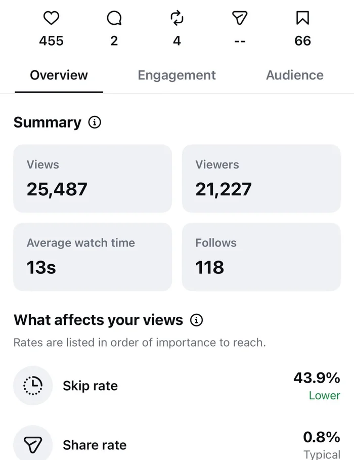

Content and marketing strategy for an international school
One content system across four platforms, built to earn the trust of parents, teachers and students.
My role: Social Media Specialist
23,220
Transylvania College, across Instagram, Facebook, TikTok and LinkedIn
10,282
Imperfecți podcast, across all platforms
2,600+
Good Mom's Circle: 1,008 on Instagram, 1,500 on Facebook and 116 on TikTok
The results, straight from the analytics

Posts I created
See it live
The challenge
- Standing out in a crowded education market.
- Explaining complex values, like wellbeing and education, clearly.
- Keeping a consistent, high-quality presence on every platform.
Strategy
- Built a content system across platforms that matches the school's positioning.
- Created content pillars for parents, educators and students.
- Positioned the school's leadership as a trusted voice through personal branding.
Execution
- Planned monthly content calendars, filmed and edited Reels and short videos.
- Turned long-form ideas into short-form content.
- Photographed events and turned them into content.
- Tracked analytics in Meta Business Suite and TikTok, and adjusted content based on what performed.
Tools
- Notion
- Meta Business Suite
- Trello
- TikTok Creative Center
- Google Trends
- Looker Studio
- Google Analytics
- CapCut
- Sony A7S III
- iPhone 15 Pro Max